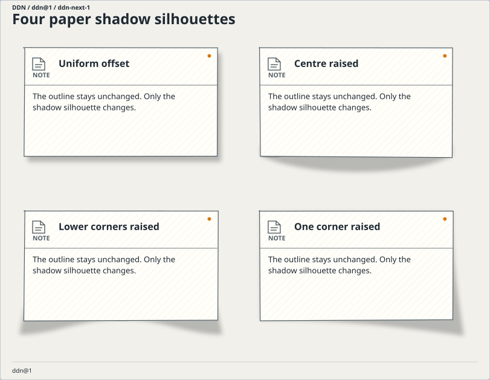
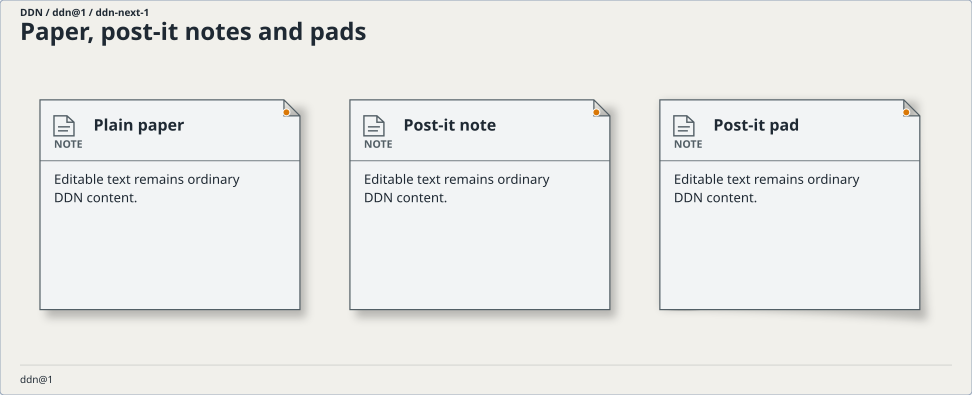
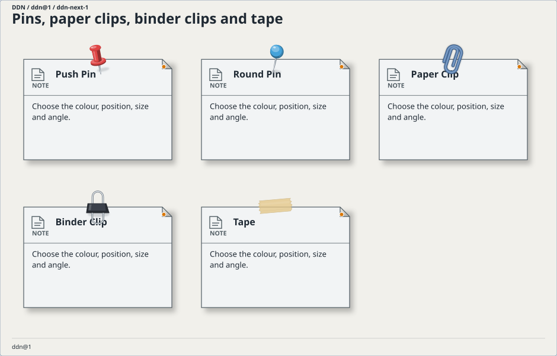
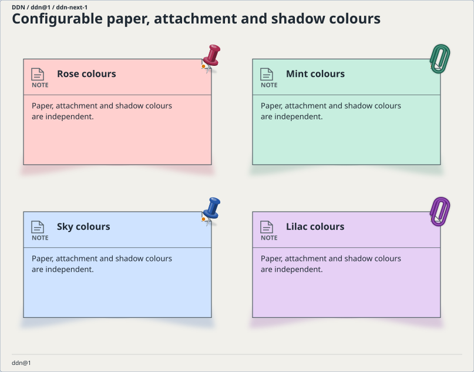

Appearance gallery
Paper, shadows and stationery.
Keep the diagram editable. Choose the paper, shape the shadow, and colour each attachment independently.
Open an example in the designer, select an item and choose Paper & attachments. Paper appearance is independent of the item’s meaning and review status. Pins here are visual attachments; they do not cast votes or certify a design.
A live design board
Four shadow silhouettes
Offset, centre raised, lower corners raised and one corner raised. Shadow shape changes without changing the diagram outline.

Notes and layered pads
Plain surfaces, sticky notes and layered note pads retain editable text, connections and source identity.

Pins, clips and tape
Push-pins, round pins, paper clips, binder clips and tape can be positioned, sized, rotated and recoloured.

Independent colours
Set the paper background, each attachment’s colour and the shadow colour separately. Shading follows the selected colour.

Short notation, optional detail
element Idea as note
with
paper note
shadow centre
background.color "#d7efc7"
decorations
item
kind push-pin
color "#c63f54"
view Workshop as ddn@1
use IdeaOmit colour, size, position or angle to use their defaults. Paper notes and pads default to pale yellow; explicit file colour overrides CSS, and CSS overrides the standard. Use shadow none, paper plain, or an empty decorations list to remove an effect. The same appearance can be saved as a scoped default and reused.
Shadow settings include colour, opacity, blur, lift, offset and spread. Attachment positions use lt ct rt lm cm rm lb cb rb for left/centre/right and top/middle/bottom. Numeric size and offsets use logical pixels; rotation uses degrees. SVG and PNG exports contain the same local vector effects.